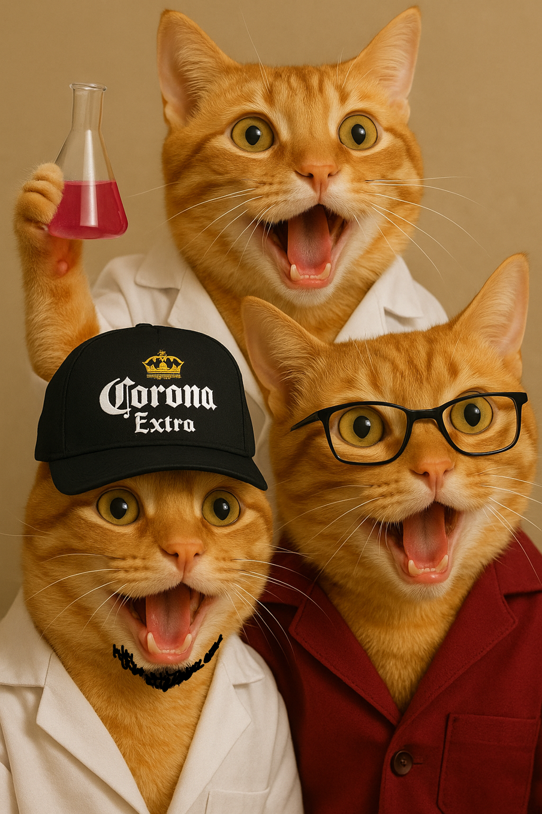

Página Principal
Reportes ▾
Práctica 1: Reconocimiento de Equipos
Práctica 2: Sedimentación
Práctica 3: Filtración
Práctica 4: Planta Purificadora
Práctica 5: Ósmosis Inversa
Práctica 6: Extracción Líquido-Líquido
Práctica 7: Destilación
Práctica 8: Adsorción
Práctica 9: Secado
Práctica 10: Cristalización
Anexos
Teoría

Página en Construcción, mientras admire a estos 3 gatitos para bajar el estrés